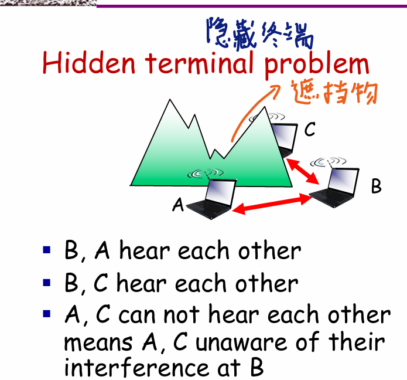
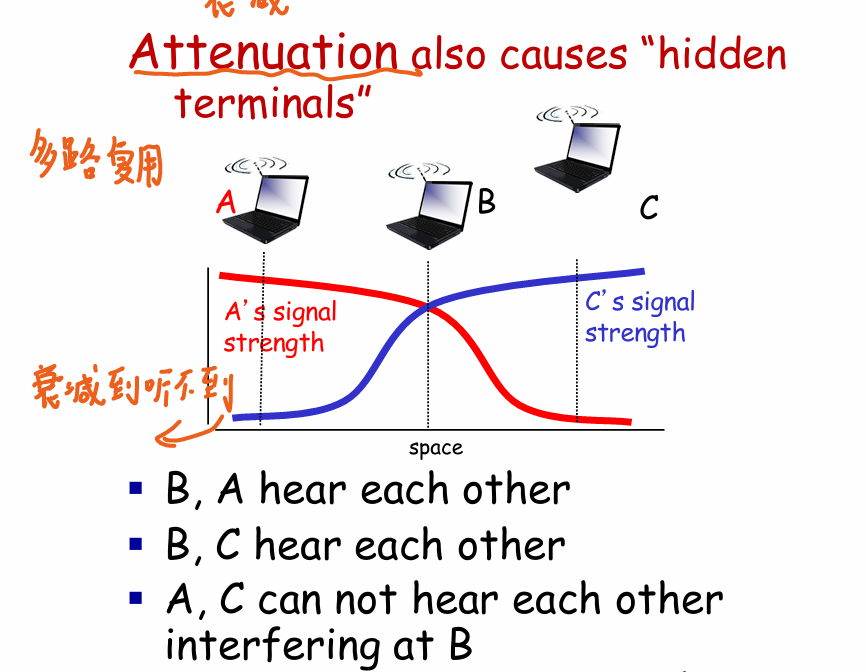
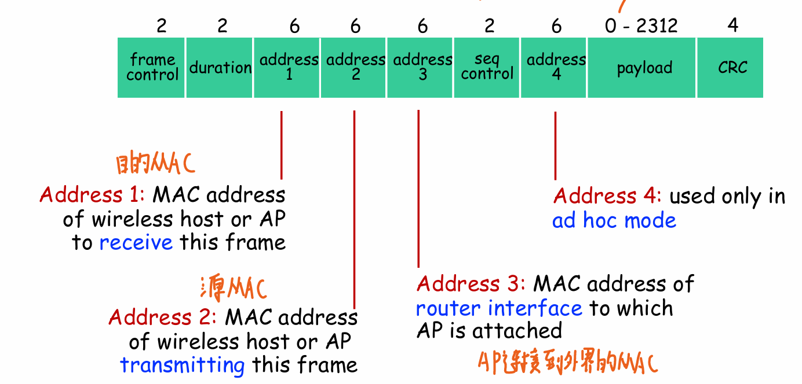
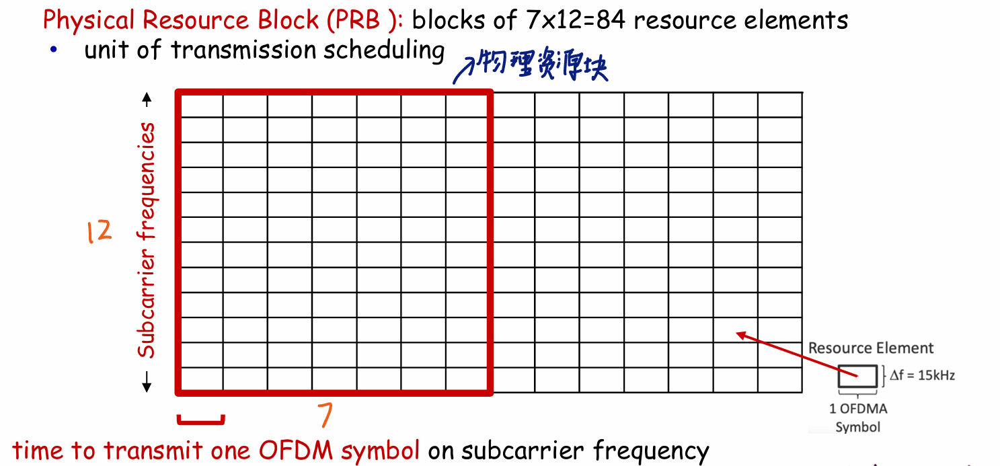
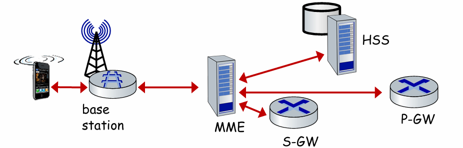
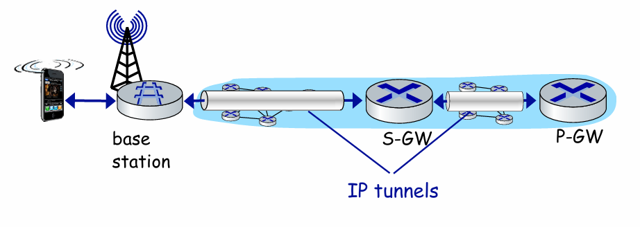
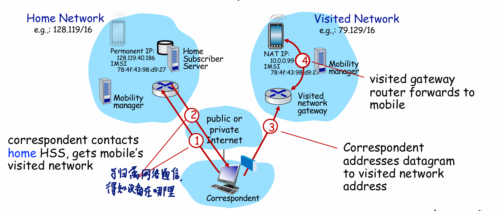
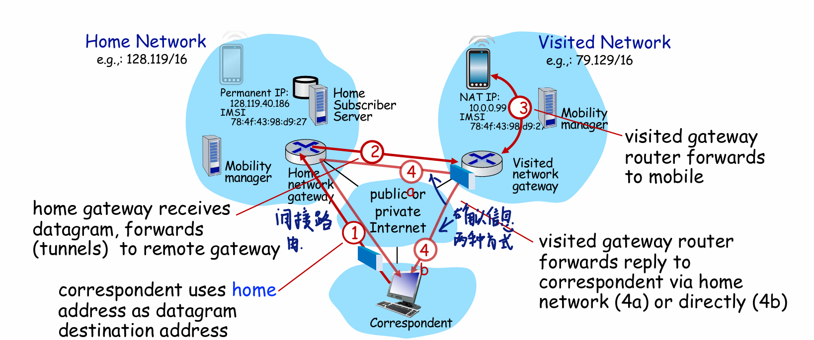

无线网络和移动网络
组成
-
无线主机
运行应用程序的端系统设备
-
无线链路:
主机通过无线链路连接到基站
-
基站:
连接方式:
- 自组织: 没有基站,使用其他的主机节点来传播消息
- 基站模式: 有基站,是可以在基站间移交的(设备可以移动)
无线:
缺点:
-
在传播的过程中有损耗,和频率,距离成正比;
-
有多重路径的问题,可以通过反射导致接收到同样的数据在不同的时间->具有时间的一致性,每一次传播的波在一定的时间内是一致的,没有重叠.
-
噪声:SNR(信噪比),即信息量和噪声的比值,越大越好.BER(bit差错率),比特位错误的概率,越小越好.传播的速率越大,比特差错率越大,或者信噪比越小;

-
节点相互不可见:
-
隐藏终端:由于遮挡物的影响,两个节点不知道彼此的存在: 
-
衰减:两个节点听不到彼此的存在:

-
CDMA:码分复用:Code Division Multiple Access
使用不同的正交(相乘相加为0)的码对要传输的多路节点数据包进行编码相加,在接收端进行根据码的解码,实现多路复用(同频率同时隙传输).

- 对于sender_i (有M个sender)有单个位的数据$d_i$,8位的码(由正一和负一组成)$c_i$,则最终的$Z_i=d_i\times c_i$,对于每一个sender,都形成这样的Z,最终将Z相加并发送给receiver:$Z^{*}=\sum_{0}^{M}{Zi}$.
- 对于receiver想要解析出sender_i的信息,则$d_{i}=\frac{\sum_{m=1}^{M}Z^{*}\times c_{i}}{M}$.
WIFI:802.11
将频率划分为11个信道(没有重叠)
基础结构(基础服务集):1.一个接入点(基站) 2.一些列的无线主机
运行在同一个信道的APs会有碰撞的可能的,所有需要运行CSMA/CA
802.11连接:
- 到来的主机首先扫描每一个信道,监听信标帧(里面包含着接入点的名称(SSID),MAC地址)
- 选择一个AP去连接
- 开始认证
- 运行DHCP分配IP
扫描的过程:
-
被动扫描: APs向主机发送信标帧,主机选择一个向AP发送关联请求帧,选择的AP向主机发送关联响应帧
-
主动扫描:
主机广播探测请求帧,APs发送探测响应帧,主机向选择的AP发送关联请求帧,AP向主机发送关联相应帧
使用协议CSMA/CA:碰撞避免:Carrier Sense Multiple Access/Collision Avoidance
为什么802.11要使用CSMA/CA的方式:
- 隐藏节点和暴露节点问题： 在无线网络中，存在隐藏节点和暴露节点的问题。节点之间无法直接检测到冲突，因此无法像有线网络那样依靠冲突检测来解决冲突问题。CSMA/CA通过采用持续监听的方式来尽量减少这些问题的影响，而CSMA/CD无法有效处理这种情况。
- 碰撞的后果： 在无线网络中，碰撞的后果是严重的，因为当多个节点同时发送数据时，发生碰撞主机检测不出来,会一直将整个的数据包传输，降低了网络性能。CSMA/CA通过避免碰撞的方式来减少重传，提高了效率。
具体原理

- 首先监听信道空闲DIFS(96bits)时间,假如空闲则发送给receiver一个RTS(request to send);假如信道忙就进行$2^{2+i}$的指数回避;
- receiver 接收到了RTS以后就等待一个SIFS的时间以后,发送给sender一个CTS(clear to send),说明允许发送.
- sender接收到了CTS,等待一个SIFS时间以后,就开始发送帧,并且预约信道(其他的sender发现了CTS就回抑制发送)
- receiver接收到了就使用CRC检验帧,等待SIFS的时间,正确则发送ACK
- 假如sender接收到了ACK就重复上面的阶段,开始进行等待DIFS,否则就进行指数级回退.
802.11 frame
- 帧控制字段（Frame Control Field）：
- 长度为2个字节，包含了数据帧的类型（数据帧、管理帧、控制帧）、子类型（具体数据帧类型）、帧的方向（发送或接收）等控制信息。
- 目标地址（Destination Address）：
- 长度为6个字节，指定了数据帧的接收方的MAC地址。
- 源地址（Source Address）：
- 长度为6个字节，表示数据帧的发送方的MAC地址。
- 接入点地址（BSSID，Basic Service Set Identifier）：
- 长度为6个字节，用于标识接入点（Access Point）的MAC地址，适用于基础服务集（BSS）模式。
- 序列控制字段（Sequence Control Field）：
- 长度为2个字节，包含了帧的序列编号，用于管理帧的传输顺序和可靠性。
- 帧体（Frame Body）：
- 包含了实际的数据负载，如IP数据报等。
- 校验序列（FCS，Frame Check Sequence）：
- 长度为4个字节，用于检测数据帧在传输过程中是否发生损坏，确保数据的完整性。通常使用CRC校验。
速率更改
当主机远离AP的时候:
- SNR降低,BER上升.
- 当BER过高的时候,使用更低的传输速率
电源管理:
主机会陷入睡眠中,并且每隔一段时间就苏醒接受消息,并且告诉AP自己要陷入睡眠中
蜂窝网络:
- 移动设备: 使用存储在SIM卡中的IMSI信息(64bite)
- 基站: 在网络的边沿,和周围的基站进行合作
使用正交频分复用:(FDMA+TDMA)
按照频率和时间将其划分为PRB(物理资源块) 
将每一个PRB分为不同的用户
LTE架构:
- HSS : Home Subscriber Service
- 存储着用户的信息,和MME一起进行用户的认证
- Serving Gateway (S-GW)：
- S-GW位于移动设备与互联网之间的数据路径上。
- 主要功能是
连接用户设备与移动核心网络，并负责用户数据的传输。
- Packet Data Network Gateway (P-GW)：
- P-GW是通往移动蜂窝网络的网关。
- 它类似于其他互联网网关路由器，是
连接移动网络与外部互联网的关键节点。 - P-GW提供网络地址转换（NAT）服务，管理移动用户的IP地址。
- MME:Mobility Management Entity:
- 设备认证：
- 移动设备管理：
- 手持设备在不同蜂窝区域之间的移动，在实现无缝覆盖的同时应对设备的切换（handover）。
- 路径设置（隧道）：
- 从移动设备到Packet Data Network Gateway（P-GW）之间的路径（tunneling）建立.
LTE:
控制平面:
数据平面:(使用隧道技术)
协议:
-
无线主机和基站进行连接:
- 信令信号广播：
- 基站每隔5毫秒在所有频率上广播主同步信号（Primary Synchronization Signal）。
- 多个载波的基站可能同时广播同步信号。
- 移动设备定位与信息获取：
- 移动设备首先搜索到主同步信号，然后在这个频率上找到第二同步信号。
- 移动设备接收基站广播的信息，包括信道带宽、配置信息，以及基站所属的蜂窝网络信息。
- 移动设备可能同时从多个基站以及多个蜂窝网络获取信息。
- 基站关联选择：
- 移动设备选择要关联的基站，通常会优先选择归属的“家庭载波”（home carrier）。
- 认证、建立状态、设置数据平面：
- 完成基站关联后，还需要进行后续步骤，如认证移动设备的身份、建立通信状态和设置数据传输通道等操作
- 信令信号广播：
-
将数据从无线主机发送到基站:
-
链路层协议:
使用Package Data Convergence(压缩IP头和加密),Radio Link Control(包分段和重装),Medium Access(OFDM)
-
-
将数据从基站传输到P-GW:
-
应用层协议:GTP-U
使用GTP协议(应用层协议)将应用数据封装(在基站中),然后发送给S-GW,S-GW再重新隧道发送给P-GW,在设备移动的时候,只有隧道的终点改变
-
睡眠模式
- 轻度睡眠（Light Sleep）：
- 在设备长时间（数百毫秒）无活动后进入轻度睡眠状态。
- 设备定期（数百毫秒）唤醒来检查是否有下行传输任务需要处理。
- 深度睡眠（Deep Sleep）：
- 在设备长时间（5-10秒）无活动后进入深度睡眠状态。
- 移动设备可能在深度睡眠时更换蜂窝区域（cells），这样需要重新建立与新基站的关联。
移动性
在不同的网络提供商中的网络间移动
首先主机向访问网络发送信息联系,然后被访问网络的MME向主机的SHH注册主机在哪里
直接路由
间接路由
连接到不同的访问网络
基站关联是移动通信网络中的重要步骤，包括以下主要阶段：

- 基站关联：
- 移动设备向基站提供国际移动用户识别码（IMSI），以便识别自身和归属网络。
- 通过这一步骤，移动设备与基站建立关联，选择归属的基站进行通信。
- 控制平面配置：
- 移动管理实体（MME）和归属家庭子系统（Home Subscriber Server，HSS）建立控制平面状态，告诉HHS这个无线主机在这里.
- 数据传输配置：
- MME为移动设备配置转发隧道，以便在网络中传输数据。
- 访问网络和归属网络建立从归属分组数据网关（P-GW）到移动设备的数据传输隧道。
- 移动切换：
- 移动设备改变其连接点，即改变所访问网络的位置，实现移动切换。
基站转换
- 当前基站选择目标基站：
- 当前基站选择目标基站，并向目标基站发送Handover Request消息。
- 目标基站预分配射频时隙：
- 目标基站为手持设备预分配无线电时间插槽，并以HR ACK响应，携带所需要的信息传输给手持设备。
- 当前基站通知手持设备新基站信息：
- 当前基站通知手持设备已切换到新基站，手持设备现在可以通过新基站发送数据，这样就完成了切换过程。
- 当前基站停止向手持设备发送数据包：
- 当前基站停止直接向手持设备发送数据包，并开始把数据包转发给新基站（新基站再通过无线通道发送给手持设备）。
- 目标基站通知MME：
- 目标基站通知移动管理实体（MME）它是新的基站，MME指示服务网关（S-GW）改变隧道的终点为目标基站。
- 目标基站回复当前基站：
- 目标基站向当前基站发送确认（ACK）：切换已完成，当前基站可以释放资源。
- 手持设备数据包经新隧道流向S-GW：
- 手持设备的数据包现在通过新的隧道从目标基站流向服务网关（S-GW）。